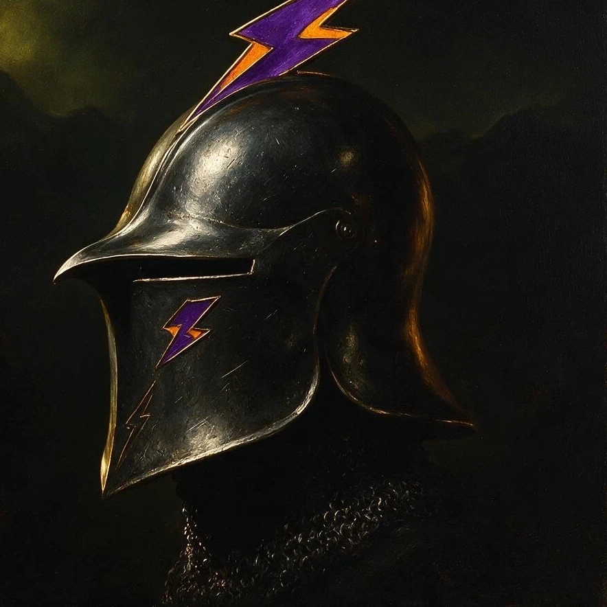

Stormlands · Seat of Blackhaven
HOUSE DONDARRION
“Swift and Sure”
Hierarchy
Structure
From the Lord of Blackhaven down to the newest levy, every rank in House Dondarrion answers to the one above it. A line of command forged the way the house was founded — swift, and sure.

House Overview
A short standing record of the house as it exists today.
Promotion Guide
Eight ranks stand between a new levy and the Lord Marshal of Blackhaven.
Levy
Starting rank. You've taken your oath and begun your service.
Swordsman
Attend 2 events or deployments, logged in #activity-log.
Man-at-Arms
Attend 4 events or deployments, logged in #activity-log.
Serjeant
Attend 5 events or deployments, logged in #activity-log.
Master-at-Arms
Attend 8 events or deployments, logged in #activity-log, then pass
a special advancement test set by your superiors. Once ranked, you'll serve a one-week trial
period proving your activity.
Knighthood Path
Squire — Must be chosen by a knight, at any rank.
Knight — Must pass the knighthood trials and be knighted in-game.
Commandant of Blackhaven — Heads the Knighthood. Chosen by the Lord Marshal or higher, with authority over the division.
All knights are required to attend their squire's official knighting, as a sign of respect and professionalism.
Guardsman Path
Blackhaven Guardsman — Must pass an elite tryout.
Commandant of Blackhaven — Heads the Blackhaven Guard. Chosen by the Lord Marshal or higher; answers only to the Lineage or higher.
All Guardsmen are required to take an Oath of Silence.
Blackhaven Commander
Chosen by the Lord Marshal or higher. Holds authority over both the Knighthood and the Main Force.
Marshal
Chosen by a Marshal or higher. Holds absolute authority over the Knighthood and Main Force, advises the Lord Marshal, and stands in as Lord Marshal during their absence.
Lord Marshal
Chosen by the Lord of House Dondarrion.
Family Tree
The line begins with its Lord. The rest will be written in time.
Lord Rykard Dondarrion
Lord of House DondarrionThe rest of the Dondarrion line will be added soon.